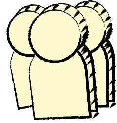
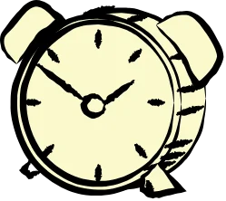
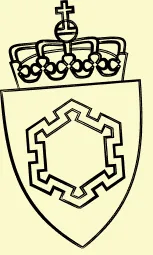
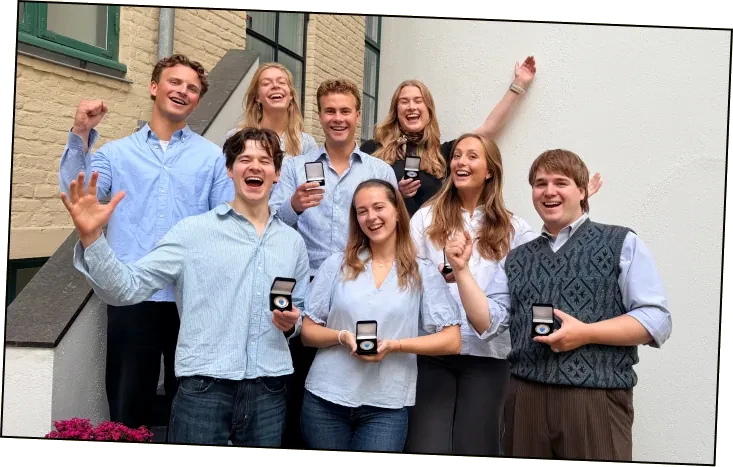
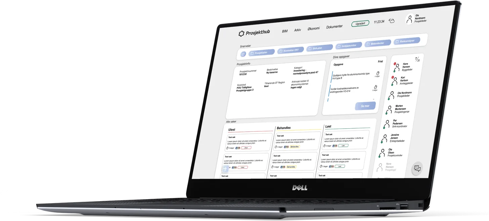
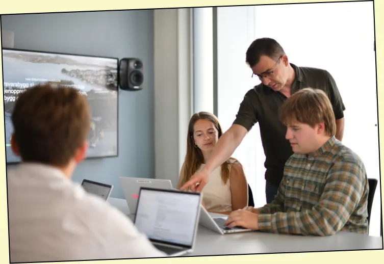
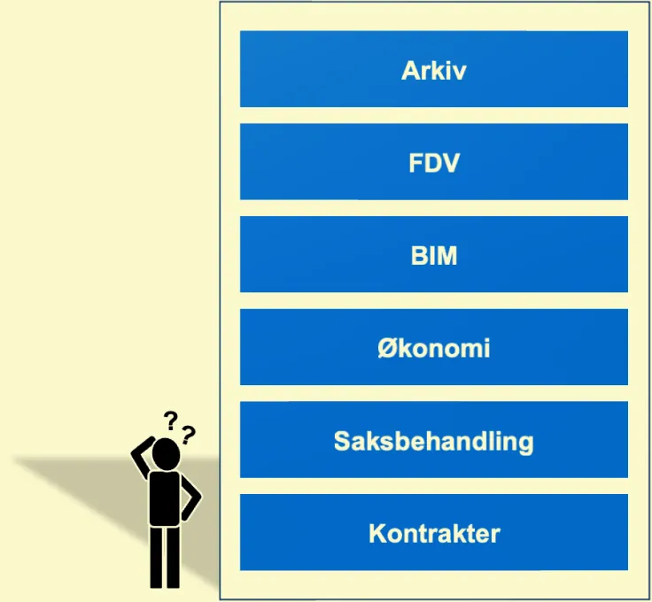
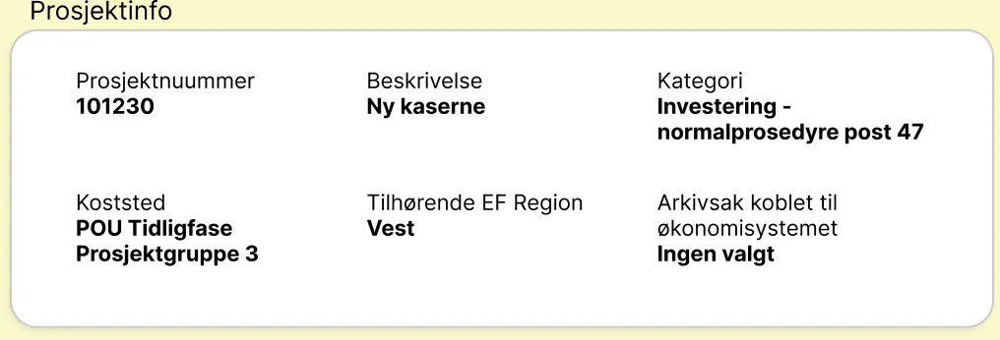
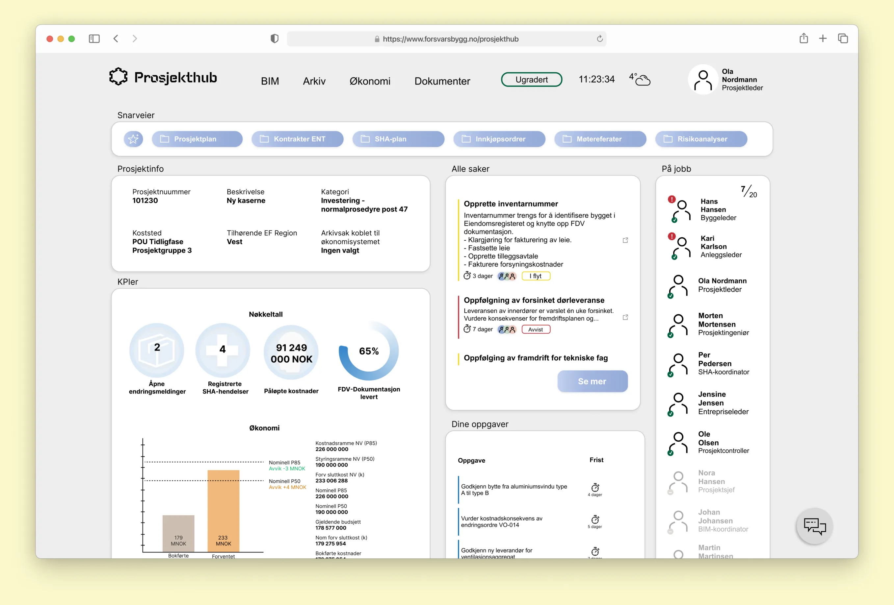
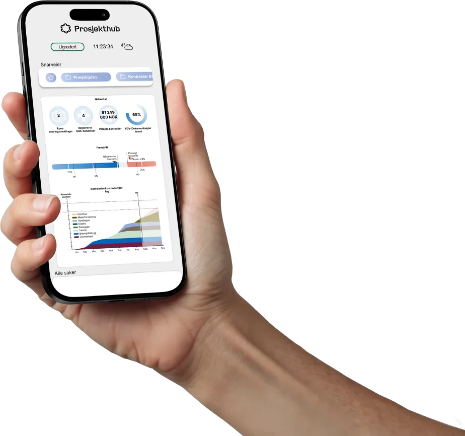

Prosjekthub

GruppeprosjektMed Olivia Skarnes, Lea Mæhlum og Sandra Rajic Riise
Varighet6 uker, sommeren 2026
SommerinternshipSluttleveransen i et sommerinternship i Forsvarsbygg
Om prosjektet
Prosjektledere i Forsvarsbygg hopper daglig mellom fem eller flere systemer som ikke snakker sammen. Vi undersøkte hvordan informasjonsflyten i byggeprosjekter kan bli bedre, samtidig som Forsvarsbygg innfører Omega 365 som felles prosjektplattform.
Min rolle
Vi var åtte studenter fra blant annet byggingeniørfag og datateknologi, delt i to team. Jeg jobbet i teamet for digital byggeplass og hadde ansvaret for designarbeidet. Intervjuene, befaringene og brukerhistoriene gjorde vi sammen. På Figma-prototypen var vi to, og jeg laget komponentene som ble brukt i den endelige prototypen.

Slik jobbet vi
Steg 1: Avgrense oppgaven
Oppdraget var bredt: digitalisering av byggeprosjekter. I starten holdt vi workshops og idéprosesser for å få en felles forståelse av problemet og finne ut hvor vi kunne skape mest verdi på seks uker. Vi landet på informasjonsflyten i gjennomføringsfasen, og hvordan Omega 365 kan støtte den.

Steg 2: Kartlegge hverdagen
Gruppen gjennomførte rundt 40 semistrukturerte gruppeintervjuer med prosjektledere, byggeledere, entreprenører og systemforvaltere, og jeg var med på om lag 20 av dem. Vi brukte intervjuguide og skrev notater etter hvert intervju.
I tillegg var vi på befaring på byggeplasser, gikk gjennom styrende dokumenter og prosesskart, og møtte Sykehusbygg, som har brukt Omega 365 i nesten ti år.

Steg 3: Finne kjernen i problemet
Vi grupperte funnene i fem områder: informasjonsforvaltning, prosjektstyring, datakvalitet, kultur og teknologi. På tvers av dem fant vi én felles årsak. Informasjonen finnes, men den er spredt på systemer, dokumenter og aktører. Brukerne må huske hvor ting ligger, og en endring blir lett bare gjort ett sted.
Derfor skulle løsningen ikke legge til nye datakilder, men gjøre det som allerede finnes synlig for riktig rolle til riktig tid.

Systemene en prosjektleder hopper mellom i dag. Steg 4: Brukerhistorier og designprinsipper
Fra intervjuene skrev vi brukerhistorier som styrte hva dashbordet skulle prioritere.
Designet bygger på Nielsens brukbarhetsheuristikker, særlig synlig systemstatus, gjenkjenning fremfor hukommelse, konsistens og brukerkontroll, og på Don Normans prinsipper om synlighet og tilbakemelding.
Samlet oversiktSom prosjektleder ønsker jeg å se alle oppgaver, varsler og hendelser samlet i ett dashbord, slik at jeg raskt ser hva som krever handling.
Personlig oppgavelisteSom prosjektleder ønsker jeg en oppgaveliste der jeg kan markere oppgaver som fullført, slik at jeg ser hva som gjenstår.
Nye sakerSom prosjektleder ønsker jeg å se nye dokumenter, endringsvarsler og saker samlet, slik at jeg ikke går glipp av viktige hendelser.
Steg 5: Teste og forbedre
Mange brukere var på sommerferie mens vi designet, så vi brukte heuristikkene til å evaluere og forbedre prototypen underveis. Da de kom tilbake, testet vi den med brukere.
De ønsket mer prosjektinformasjon, som prosjekt-ID-en fra Agresso, og pekte på at de ofte har flere prosjekter samtidig. Derfor fikk dashbordet et felt med prosjektinfo, en prosjektvelger i brukerprofilen og snarveier direkte til de andre systemene.

Feltet Prosjektinfo kom til etter brukertesten.
Løsningen
En klikkbar Figma-prototype av et rollebasert dashbord i Omega 365. Vi tok utgangspunkt i prosjektlederen for å vise prinsippet, men hver rolle skal få sitt eget dashbord med informasjonen den trenger.

Trykk på bildet for å prøve prototypen selv.
Snarveier
Knapper til BIM, Arkiv, Økonomi og Dokumenter, og mapper du velger selv.
Prosjektinfo
Prosjektnummer, kategori, kostsjef og region på ett blikk, og bytte av prosjekt via profilen.
Alle saker
Et trafikklys viser status på sakene, med filtrering på fagområde, ansvarlig og dato.
Dine oppgaver
En personlig oppgaveliste sortert etter frist.
KPIer
Nøkkeltall og fremdrift for økonomi og milepæler.
På jobb og chat
Hvem som er pålogget, og en chat knyttet til hver sak som kan arkiveres for sporbarhet.
Resultat
Vi presenterte løsningen for ledelsen og ansatte i Forsvarsbygg i en åpen presentasjon og fikk mye positiv respons. Brukerne vi hadde intervjuet, ønsket å se dashbordet realisert.
I rapporten anbefalte vi også hvordan dashbordet kan innføres: med superbrukere, opplæring tilpasset hver rolle og brukerinvolvering gjennom pilotprosjekter. Gevinsten avhenger nemlig av at folk faktisk tar systemet i bruk.
